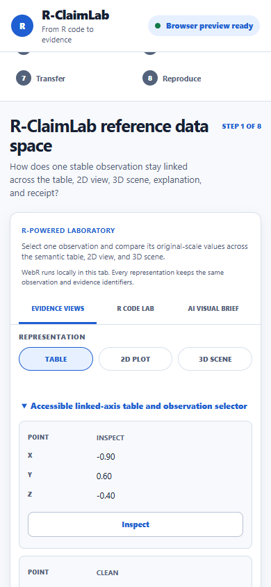
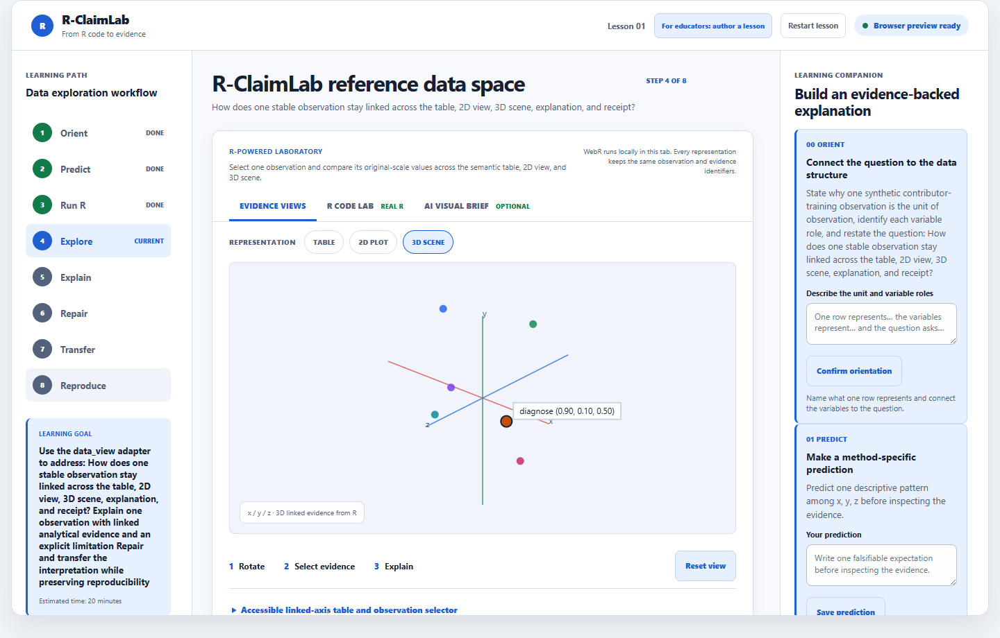

01 · Analyze
Run method-specific R
Create the analysis object and provenance with an inspectable source command.
The browser presents the evidence. R owns the analysis. Stable identifiers keep the selected value aligned across representations, reasoning, and the final receipt.
Create the analysis object and provenance with an inspectable source command.

Assign stable observation, dimension, value, and selection identifiers.

Table, 2D, and optional 3D views point to the same evidence record.

Record prediction, evidence choice, explanation, repair, transfer, and checks.